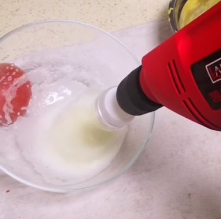
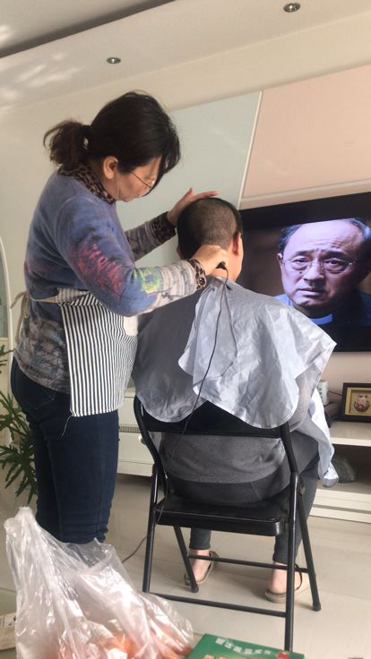
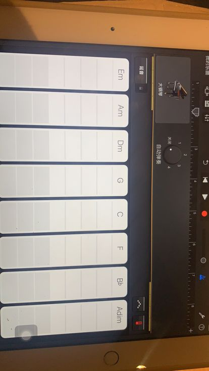
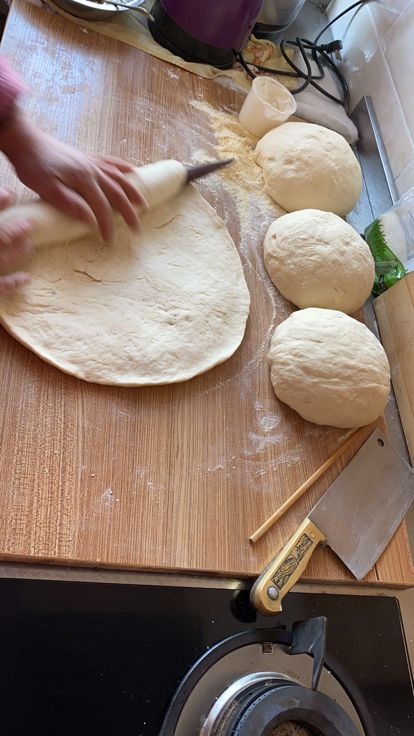
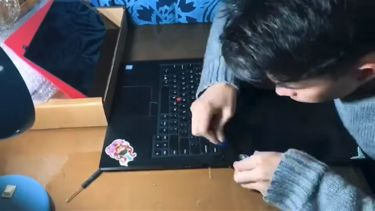

黄冈封城：在疫区，两个儿子的药物传递
原文链接 备份链接 湖北人什么时候能回北京？依然个未知数。青年作家邓安庆的老家湖北黄冈武穴市，离武汉两百公里远。每年春节，他跟千千万万人一样回家乡过年待一周再返岗。1月23日，武汉封城，次日，黄冈以及所管辖的县市也都相应“封城”。直至现 …


被迫宅在家中的四十来天，让时光仿佛倒流二十年，我们回到了那个万事需要自力更生的年代。
没有快递，没有外卖，也没有Tony老师，习惯用钱解决问题的便捷生活暂时离我们而去。但自力更生也让不少人发现，原来，我们对自己的力量一无所知。
理发不是非得找Tony老师，淘宝上花几十块买个电推子就能收获快乐。花八十块通厕所的服务，其实用马桶神器压一下就可以解决。像凉皮、油条、馒头等等看起来复杂的食物，做起来也没有想象中那么难。
我们只是自己限制了自己的能力，而如今，封印解除了。
我这应该算是个泥石流技能？之前刷微博时看到在家自制打蛋器的视频，觉得很好笑也很有意思，决定自己也做一个。正好想吃甜品，又没团购成功。

我把之前家里装修时买家具送的电钻找出来，然后将一个矿泉水瓶子剪成两半，下面剪成锯齿状，再在瓶盖上钻个洞，上一个钉子，然后把钉子的尾巴安在钻头里就可以用了。
电钻打蛋清打发得很快，但要按轻一点，不然就甩出来了。唯一的缺点是电钻有点重，举着手酸。


疫情期间家里马桶堵了，除了自己动手还能怎么办。
我先买了个传统的马桶拔子，没用。网上查的攻略也不管用，就去京东搜，有好多家牌子的马桶神器，但只有这个叫一炮通的有货，我这里可以收到，就将信将疑地买了。

它的外形像以前给自行车轮胎打气的打气筒，有一个气压表，打到通马桶需要的气压即可——就一下，立马通。
建议大家都入手一个，有了它通马桶师傅可能得失业。

最近家里厨房的存货不多，每天吃菜薹吃得要命，就想换个口味。我在抖音看到发绿豆芽的教程，家里正好有就做了。
没大盆子用就用的塑料瓶子，我爸在上面扎了好多洞，因为绿豆泡在水里久了会臭。我每天早晚冲两次水，控完了就放着。泡到第四天，还没完全成功就给炒了，嗝。

吃的时候我爸还说应该用黄豆的，但现在武汉豆制品挺紧缺，我家这边豆腐上周才有团购，所以没什么可挑剔的。
我爸四十岁后喜欢上平头，觉得清爽，方便，头发长过一厘米就觉得不舒服。疫情期间，理发店都关门了，他没得办法。幸好我妈从淘宝上花几十块买了个电推子，儿童用的那种，剃刀头上有个罩子，贴着头皮推不会有高低不均匀的情况。

那天我围观了剃头的过程，我爸一直赞美我妈手艺好，还强烈安利我也推平头。后来他出去买菜时，超市里查体温的工作人员问他在哪里理的头发，他得意地炫耀了一番，像个得到糖果的小孩子。

我之前没有学过乐理，虽然一直想买电子琴，但没机会实现。这两天我跟着一个朋友学习编曲，用ios自带的GarageBand（库乐队），真的，我一个小时就学会了，没我开始想的那么难。

里面有各种乐器，还可以选智能乐器。比如我要编一个新裤子的《你要跳舞吗》，可以选多个音轨，先加入鼓，然后再选贝斯，吉他，键盘。编前四个八拍用不了五分钟就听着像模像样，太有意思了。
烧烤的工具以前家里就有，疫情期间因为怀念武汉一家烧烤摊子的味道，加上太馋了，就学着它的做法在家里的后院烤。


肉切成大块，放点盐腌十分钟。炉子烧炭，烤的时候用剪刀把烧焦的部分剪掉。看见烤的颜色和外面摊子上卖的差不多时，就可以撒上佐料。
烤好后我把照片发到烧烤群里，受到了烧烤摊老板的表扬哈哈。

前阵子朋友圈流行做凉皮，看了攻略后才知道，原来凉皮是用高筋面粉做的。朋友圈里有人成功，也有人失败。最近因为疫情在家空闲时间比较多，不想看沉重的新闻，就决定跟风做凉皮，特意去超市买了一袋高筋面粉。

做起来比想象中费事太多。最大的意外是洗面剩下的面筋，不知是温度太低了，还是里面水分太多，酵母发酵不好，孔眼没发起来。

虽然不如一些凉皮店做得好吃，但这种时候能在家里吃上凉皮，还有什么可抱怨的呢？

做油条其实挺麻烦的，还费油，最重要的是我家没有泡打粉，就按老家做油饼的方式做的。
发好面后揉出气，擀成饼，再切成条。然后把两个长条叠起来，用筷子放中间压着 ，拿起来一扭，就可以炸了。

我和妈妈其实是一边看视频一边炸的，我觉得太麻烦了，我妈倒是还好。疫情期间我们天天在家研究吃的，要不然时间可怎么过啊。
我是一个文科生，不过男人都会对机械的东西比较感兴趣吧，再加上电子产品这种东西，拆得多了自然就会了。

我拆过诺基亚Lumia手机也拆过电脑。第一次拆自己电脑，是想清理灰尘，结果装回去之后发现，手里多了几个螺丝。很意外地不影响电脑使用，然后我就把那几个螺丝扔了，假装没有。
后来再拆东西，就学会了拆一层，画示意图记一层。

这次是给公司的电脑换屏，比较简单。因为电脑主要都是卡扣，只有四个螺丝，就大胆拆。自己拆其实主要是因为公司不给报销 ，所以干脆就淘宝买屏自己换。三百块的72%色域IPS屏，十五分钟换完了，耶。
-
如今生活越来越便利，许多时候，我们更愿意选择用钱买到结果，而不是在探索中学习和收获经验。
所以当这些天人们不得不亲自动手解决问题时才发现，原来许多事情并不像想象中那么难。
动起手来吧，get新技能的同时，说不定从中还能收获额外的乐趣。
text | 王博璨
photo | 由受访者提供
💬
# 你最近学会了什么新技能？#


原文链接 备份链接 湖北人什么时候能回北京？依然个未知数。青年作家邓安庆的老家湖北黄冈武穴市，离武汉两百公里远。每年春节，他跟千千万万人一样回家乡过年待一周再返岗。1月23日，武汉封城，次日，黄冈以及所管辖的县市也都相应“封城”。直至现 …
原文链接 备份链接 “ - 疫 情 之 下 - 父亲作为一家之主，把家里卖粮食的一万多块钱当做货款结给了供应商，按照他交代给我们的原话：“咱们已经吃亏了，就不要再让别人吃亏了，也让人家回家好好过个年。” ” …
原文链接 备份链接 EDITOR’S NOTE 编者按 2019年开始，面向农民工子女的实务学堂，和面向女工的木兰花开，在“银杏伙伴合作基金”的支持下，合作组织了女工写作班，上周推出了“女工笔下的疫情”系列文章。最近，又收 …
原文链接 备份链接 李起元说，这是他人生经历过最严重的事情了。“韩国很小，所以平时新闻也不多。现在发生了这么大的事，电视里新闻都和这个有关了。24小时，全部都是。” 文 | 王仲昀 “是的，一切在2月19日之后都变得不一样了。19日之前， …
原文链接 备份链接 凤凰新闻客户端 凤凰网在人间工作室出品 打开凤凰新闻客户端，搜索「在人间」并关注 电影《肖申克的救赎》有句台词：“不要忘了，这个世界穿透一切高墙的东西，他就在我们内心深处，那就是希望”。 枞阳县，地处安徽省中南部，长江 …